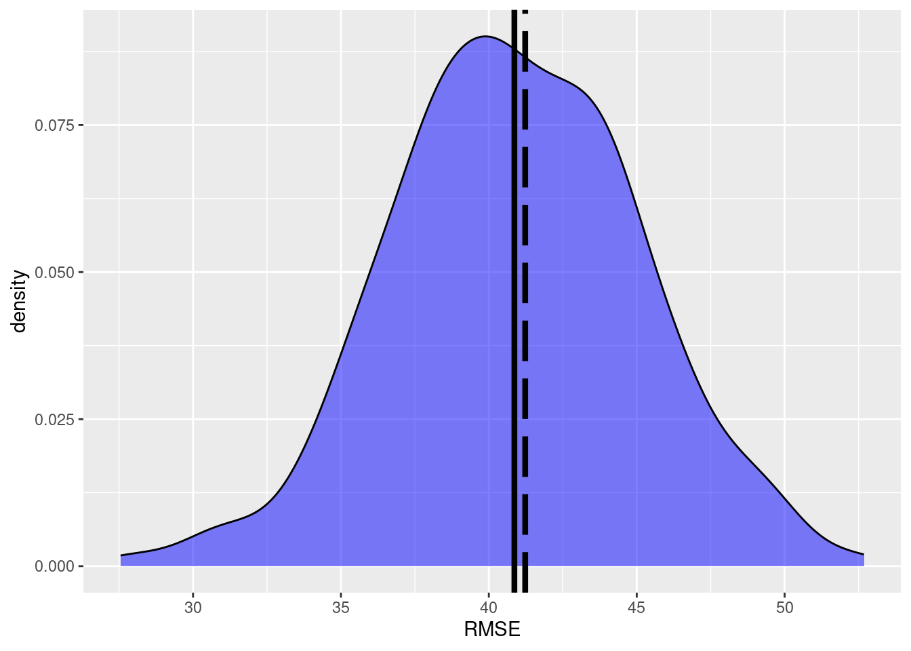
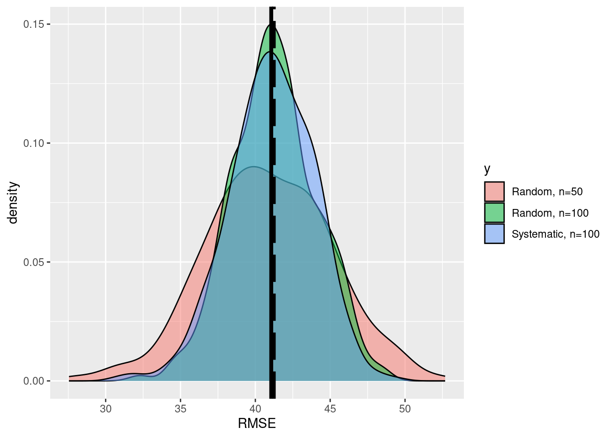

library(sf)Linking to GEOS 3.12.1, GDAL 3.8.4, PROJ 9.3.1; sf_use_s2() is TRUElibrary(raster)Lade nötiges Paket: splibrary(ggplot2)
library(rprojroot)
wd=paste0(find_rstudio_root_file(),"/tdv_session/data/")Tutorial for the EON Summer School 2024
library(sf)Linking to GEOS 3.12.1, GDAL 3.8.4, PROJ 9.3.1; sf_use_s2() is TRUElibrary(raster)Lade nötiges Paket: splibrary(ggplot2)
library(rprojroot)
wd=paste0(find_rstudio_root_file(),"/tdv_session/data/")In this tutorial we will explore the principles of design-based sampling. The simulation part is based on a presentation of Gerad Heuveling from Wageningen University, which he gave in the OpenGeoHub Summer School[https://opengeohub.org/summer-school/ogh-summer-school-2021/].
For demonstration purposes we will work with a map of forest above ground biomass (AGB) produced by the Joint Research Center(JRC) for the European Union European Commission (Joint Research Centre (JRC) (2020) http://data.europa.eu/89h/d1fdf7aa-df33-49af-b7d5-40d226ec0da3.)
To provide a synthetic example we will assume that this map (agb_pop) is an error free representation of the population. Additionally we use a second map (agb_model) compiled using a machine learning model (RF) also depicting the AGB distribution.
np_boundary = st_transform(st_read(paste0(wd,"nlp-harz_aussengrenze.gpkg")),25832)Reading layer `nlp-harz_aussengrenze' from data source
`/home/creu/edu/gisma-courses/EON2024/tdv_session/data/nlp-harz_aussengrenze.gpkg'
using driver `GPKG'
Simple feature collection with 1 feature and 3 fields
Geometry type: MULTIPOLYGON
Dimension: XY
Bounding box: xmin: 591196.6 ymin: 5725081 xmax: 619212.6 ymax: 5751232
Projected CRS: WGS 84 / UTM zone 32Nagb_pop <- raster(paste0(wd,"agb_np_harz_truth.tif"))
agb_model <-raster(paste0(wd,"agb_np_harz_model.tif"))If we assume the \(z(x_i)=\) agb.pop to be an exact representation of the population we can calculate the Root mean Square Error (RMSE) as the difference between the model predictions \(\hat{z(x_i)}\) and the population map with:
\[ RMSE = \sqrt{\frac{1}{N}\sum{(z(x_{ctor. Also today there was wind, not good for m3 i})-\hat{z}(x_{i}))^2}} \]
RMSE_pop = sqrt(cellStats((agb_pop-agb_model)^2, mean))By looking at the difference from the “true” AGB and the difference we get a true RMSE of 41.23 t/ha.
Since we know the true RMSE, we can test if a random sample estimate has a similar RMSE. We start with a random sample with \(n=100\) sample points.
n=100
p1 = st_sample(np_boundary,size=n)
plot(st_geometry(np_boundary))
plot(p1,add=TRUE,pch=1)
We can now extract the population values and the model values at the sample locations and calculate the RMSE for all sample points.
sample <- raster::extract((agb_pop-agb_model),as_Spatial(p1))
RMSE_est <- sqrt(mean((sample)^2,na.rm=T))The random sample estimates the RMSE as 42.71.
But is this an unbiased estimate?
To check if our sample based estimates are unbiased we will repeat the sampling \(k\) times.
dif <- as((agb_pop-agb_model), 'SpatialGridDataFrame')
seed<- 12324
k <- 500
n <- 50
RMSE <- rep(0,k)
for (i in 1:k) {
#print(i)
p1 = spsample(as_Spatial(np_boundary),n=n,type='random')
crs(p1)<-crs(dif)
#sample <- raster::extract((agb_pop-agb_model),p1)
error<-over(p1,dif)$layer
RMSE[i] <- sqrt(mean((error)^2,na.rm=T))
}
df <- data.frame(x=RMSE, y=rep('a',k))
ggplot(data=df,aes(x=x))+
geom_density(data=subset(df,y=='a'),
fill='blue', alpha=0.5)+
xlab('RMSE')+geom_vline(xintercept=RMSE_pop,linewidth=1.5,
color ='black', linetype='longdash')+
geom_vline(xintercept=mean(df$x),size=1.5,
color ='black')Warning: Using `size` aesthetic for lines was deprecated in ggplot2 3.4.0.
ℹ Please use `linewidth` instead.
We see that the true RMSE and the mean of the \(k\) simulation runs are almost equal. Thus, we can assume an unbiased estimate of the RMSE.
But how does the sample size \(n\) affects the accuracy?
k <- 500
n <- 100
RMSE_2 <- rep(0,k)
for (i in 1:k) {
#print(i)
p1 = spsample(as_Spatial(np_boundary),n=n,type='random')
crs(p1)<-crs(dif)
#sample <- raster::extract((agb_pop-agb_model),p1)
error<-over(p1,dif)$layer
RMSE_2[i] <- sqrt(mean((error)^2,na.rm=T))
}
df_2 <- data.frame(x=RMSE_2, y=rep('b',k))
df<-rbind(df,df_2)
ggplot(data=df,aes(x=x,fill=y))+
geom_density(alpha=0.5)+
scale_fill_discrete(labels=c('Random, n=50', 'Random, n=100'))+
xlab('RMSE')+geom_vline(xintercept=RMSE_pop,size=1.5,
color ='black', linetype='longdash')+
geom_vline(xintercept=mean(df$x),size=1.5,
color ='black')
We see that the precision of the esimtates is increased. How much did the uncertainty decrease when we increase the sample size from \(n=50\) to \(n=100\)?
sd(RMSE_2)/sd(RMSE)[1] 0.7329019Instead of a random sampling, systematic designs are more common in forest inventories for the following reasons:
p1 = spsample(as_Spatial(np_boundary),n=n,type='regular')
plot(np_boundary$geom)
plot(p1, add=T)k <- 500
n <- 100
RMSE_3 <- rep(0,k)
for (i in 1:k) {
#print(i)
p1 = spsample(as_Spatial(np_boundary),n=n,type='regular')
crs(p1)<-crs(dif)
error<-over(p1,dif)$layer
RMSE_3[i] <- sqrt(mean((error)^2,na.rm=T))
}
df_3<- data.frame(x=RMSE_3, y=rep('c',k))
df<-rbind(df,df_3)
ggplot(data=df,aes(x=x, fill=y))+
geom_density(alpha=0.5)+
scale_fill_discrete(labels=c('Random, n=50', 'Random, n=100','Systematic, n=100'))+
xlab('RMSE')+geom_vline(xintercept=RMSE_pop,size=1.5,
color ='black', linetype='longdash')+
geom_vline(xintercept=mean(df$x),size=1.5,
color ='black')